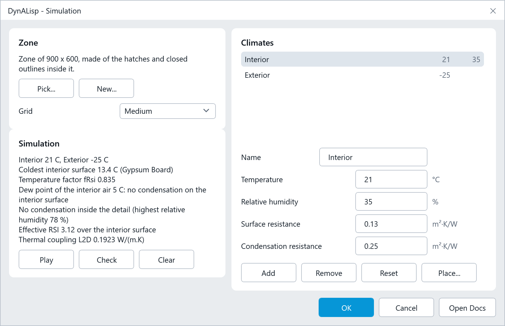

Simulation
| Function Syntax | Dyl-Simulation, SIMZONE, SIMCLIMATE, SIMCHECK, SIMPLAY, SIMPROBE, SIMCLEAR |
| Requires | AutoCAD 2015 or later for Windows, with its .NET plugin (installed with DynALisp) |
| Licence | GNU General Public License v3 |
Program Description
The Simulation tool simulates the heat through a 2D detail of the drawing (a wall section, a sill, a slab edge), as THERM does: where the cold and warm zones are in the detail, the coldest point of its interior surface and whether water condenses on it, and the thermal resistance of the whole detail, thermal bridges included. Where water vapour may condense inside the detail comes in a later version.
A detail is simulated inside a simulation zone, a rectangle or a closed polyline drawn around it, a little away from what matters. Each part of the detail is a hatch or a closed outline that knows its material: everything Quick Draw and Quick Shape draw does, and a detail drawn otherwise gets its materials with Assign Material. On each side of the detail, a climate zone covers the air: Interior, Exterior, or a climate of your own (a garage, a crawl space). The climates are kept by DynALisp, the same in every drawing: changing Interior changes every detail.
Check reads the detail of the zone and shows, over the drawing, the grid the simulation will use and every problem it found: in red, the hatches without a material, the regions of a material that has no thermal data, the holes (a place in the zone that is neither a material nor a climate, almost always something left out).
Play computes the temperature of every cell of the detail, steady, between the temperatures of its climates, and colours the detail from blue (the exterior) to red (the interior). A magenta line follows the dew point of the interior air, and the interior surfaces colder than it, where water condenses, are drawn in thick magenta. The command line gives the coldest interior surface, its temperature factor and the thermal resistance of the detail, and the probe gives the temperature at any point.
How To Use
- Draw the detail with Quick Draw and Quick Shape, or give its hatches their materials with MTASSIGN. An air space is a region too: a layer of Void, or an air material.
- Type Dyl-Simulation, or click Simulation in the Analysis panel of the ribbon.
- Under Zone, click New... and pick two corners around the detail, or Pick... to make a closed polyline into the zone.
- Under Climates, select Interior and click Place..., then draw a rectangle over the air on the interior side, overlapping the face of the detail. Do the same for Exterior.
- Type the Temperature and the Relative humidity of each climate.
- Pick the Grid, then click Check. The window closes, the grid and the problems are shown over the drawing, and the command line says what was found. Fix what is shown in red, then check again.
- Click Play (or type SIMPLAY). The temperatures are shown over the detail and the command line gives the results. At its prompt, Probe gives the temperature at the points you pick, Window opens the window again, Clear clears what is shown, and Enter ends.
- SIMCLEAR, or Clear in the window, clears what is shown.
Simulation Window

Zone
| Setting | Use |
|---|---|
| Pick... | Closes the window to pick a simulation zone already in the drawing, or a closed polyline to make into one. An outline that is a region of a material is refused: draw the zone around it. |
| New... | Closes the window to draw a new zone, a rectangle by two corners (or Pick at the prompt), on the SIMZONE layer key, which is not plotted. |
| Grid | The size of the cells of the simulation: Coarse (10 mm), Medium (5 mm) or Fine (2 mm), at most. The lines of the grid go through every corner of the detail, so a thin layer gets cells as thin as itself, and grow slowly from it. Kept on the zone. |
Above the buttons, the size of the zone picked. A zone already picked in the drawing opens with the window; a drawing with one zone only opens on it.
Simulation
| Setting | Use |
|---|---|
| Play | Saves the climates and the grid, closes the window and simulates the heat through the detail of the zone: see What Play Shows. A detail with a problem that Check would show, or a climate without a temperature, is not simulated: its problems are shown instead. Greyed out while no zone is picked. |
| Check | Saves the climates and the grid, closes the window, reads the detail of the zone and shows its grid in grey, its problems in red and the zone in orange over the drawing. Greyed out while no zone is picked. |
| Clear | Clears what Check or Play showed, and opens the window again. |
Above the buttons, what the last check or simulation found: the problems first, then the regions and materials of the zone and the size of its grid, or the results of the simulation.
Climates
| Setting | Use |
|---|---|
| Name | The name of the climate selected. Two climates cannot have the same name. |
| Temperature | The temperature of its air, in °C (°F in an imperial drawing). Empty: not known yet. |
| Relative humidity | The relative humidity of its air, 0 to 100 %. Empty: not known yet. |
| Surface resistance | The resistance of the film of air on a face of the detail that the climate touches, for the heat that goes through it: 0.13 m²·K/W inside, 0.04 outside (ISO 6946). |
| Condensation resistance | The same resistance, used to judge the condensation and the mould on a surface: 0.25 m²·K/W inside (ISO 13788), 0.04 outside. |
| Add, Remove, Reset | Adds a climate after the one selected, removes the climates selected, puts back Interior and Exterior as they come with DynALisp. |
| Place... | Saves the climates, closes the window and draws a zone of the climate selected: a rectangle by two corners on the SIMCLIMATE layer key (red for Interior, blue for Exterior), or Pick a closed polyline. |
- OK saves the climates and the grid. Cancel drops what was changed in the window (a zone drawn or placed stays). Open Docs opens this page.
What Play Shows
Over the drawing, until it is cleared:
- Each cell of a material in the colour of its temperature, from blue at the temperature of the exterior through white to red at that of the interior, with the legend at the right of the zone. A cell of a material that touches no climate, not even through other materials (an island in a hole), has no temperature: it is grey.
- The dew point of the interior air, from its temperature and its relative humidity: a thin magenta line where the detail is at that temperature, and its mark on the legend. Inside the detail, the line only says where the dew point is; whether vapour condenses there depends on what lets it through, which comes in a later version.
- The interior surfaces colder than the dew point, in thick magenta: water condenses on them.
- The coldest interior surface, circled in magenta.
On the command line (and in the window):
| Result | What it is |
|---|---|
| Coldest interior surface | The lowest temperature of the surfaces the interior climate touches, and the material there. It is computed with the Condensation resistance of the climates (0.25 m²·K/W inside), as ISO 13788 asks to judge condensation and mould; so are the colours and the dew point line. |
| Temperature factor fRsi | (coldest surface − exterior) / (interior − exterior): 1 for a surface at the interior temperature, 0 at the exterior one. It does not depend on the temperatures picked, so it compares details; under 0.70, a heated room is at risk of mould (the limit of DIN 4108-2). |
| Dew point of the interior air | The temperature at which the interior air condenses, and whether an interior surface is colder. |
| Effective RSI (R) | The thermal resistance of the detail over the length of its interior surface, the films of air included: (interior − exterior) × length / heat flow, computed with the Surface resistance of the climates. A thermal bridge lowers it below the resistance of the same wall without it. |
| Thermal coupling L2D | The heat flow through the detail per metre of its depth and per degree between the interior and the exterior (ISO 10211). The linear thermal transmittance ψ of a thermal bridge is L2D less that of the same walls without it. |
The interior is the climate of the highest temperature among those the detail touches, the exterior the one of the lowest.
Ribbon
The Analysis panel has the Simulation button; its children are under its arrow: Simulation Zone, Simulation Climate, Simulation Check, Simulation Play, Simulation Probe, Simulation Clear.
Good To Know
- Where two hatches overlap, the one in front (the draw order) is used. A material always wins over a climate zone, so a climate zone can overlap the face of the detail: draw it a little into the detail rather than short of it, or a gap of air is left as a hole.
- The edge of the zone that is not in a climate zone is a cut: no heat goes through it. Draw the zone far enough from what you want to see (a stud, a slab edge) for the cut not to change it.
- Only the hatches and the closed outlines of the space of the zone are read, the model or the layout it is in. A block, an xref, a region or a solid is not read: explode it or hatch it first.
- A material without a thermal conductivity nor a fixed thermal resistance cannot be simulated: give it one in the Materials window.
- The temperature and the humidity of the default climates are empty until they are typed: Play refuses a climate without a temperature. Without a relative humidity, Play shows no dew point.
- What Check and Play show is not part of the drawing: it is not plotted, not saved, and goes when the drawing closes. The probe reads the last simulation of the drawing.
- An air space (a material with a fixed thermal resistance and no conductivity) is simulated as a solid of the same resistance across its thinnest side: draw it as a band, as Quick Draw does.
- A cell takes the material at its center. The grid follows the straight edges of the detail exactly; an oblique edge or an arc is followed in steps of a cell: pick a finer grid to see a sloped or round detail better.
- A grid of more than a million cells is refused: pick a coarser grid, or a smaller zone.
Command Names And Aliases
Each program has one main command starting with Dyl-. The short names are its aliases: they run the same command, and can be added, renamed or removed in Dyl-Suite (saved in Resources\Aliases.csv). The rows marked ↳ are child commands of Dyl-Simulation: they are run by their alias, or picked under the arrow of its button in the ribbon (their command is named Pst-*).
| Command | Aliases | Name |
|---|---|---|
| Dyl-Simulation | Simulation | |
| ↳ Pst-SimulationZone | SIMZONE | Simulation Zone |
| ↳ Pst-SimulationClimate | SIMCLIMATE | Simulation Climate |
| ↳ Pst-SimulationCheck | SIMCHECK | Simulation Check |
| ↳ Pst-SimulationPlay | SIMPLAY | Simulation Play |
| ↳ Pst-SimulationProbe | SIMPROBE | Simulation Probe |
| ↳ Pst-SimulationClear | SIMCLEAR | Simulation Clear |